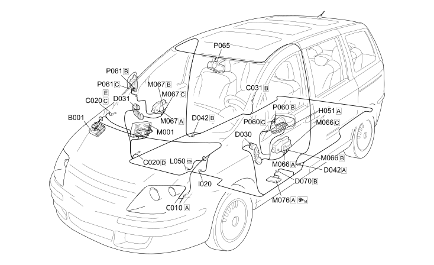

E3032 REAR VIEW MIRRORS ADJUSTMENT COMPONENT LOCATION
- Path
- Electrical equipment > 1 ELECTRICAL FUNCTIONS > E30 ELECTRICALLY ACTIVATED DEVICES > E3032 DOOR MIRROR ADJUSTMENT > E3032 REAR VIEW MIRRORS ADJUSTMENT COMPONENT LOCATION
- Kind
- topic
- Applies to
- engines: 2.0 16V JTD, 2.2 16V JTD; all production periods; only with equipment: MY 2005
- Interactive page
- https://sloeber94.github.io/elrnDB-fUlss/en/#/179008922
Applies to: engines: 2.0 16V JTD, 2.2 16V JTD; all production periods; only with equipment: MY 2005

Component code | Description | Reference to the assembly |
|---|---|---|
BATTERY | - | |
ENGINE COMPARTMENT JUNCTION UNIT | ||
LEFT FRONT EARTH | - | |
PASSENGER SIDE DASHBOARD EARTH | - | |
RIGHT REAR EARTH | - | |
DRIVER'S FRONT DOOR COUPLING | - | |
PASSENGER FRONT DOOR COUPLING | - | |
COURTESY LIGHT COUPLING | - | |
DRIVER'S SEAT COUPLING | - | |
ELECTRIC WINDOW AND REAR VIEW MIRROR CONTROLS ON DRIVER'S FRONT DOOR | ||
REVERSING LIGHTS SWITCH | ||
AUTOMATIC TRANSMISSION SOLENOID VALVES | - | |
BODY COMPUTER | ||
DRIVER'S DOOR CONTROL UNIT (NPG) | ||
PASSENGER DOOR CONTROL UNIT (NPP) | - | |
Seats/mirrors with memory control unit | - | |
LEFT EXTERNAL REAR VIEW MIRROR | Op. 7005R FRONT DOOR MIRRORS | |
RIGHT EXTERNAL REAR VIEW MIRROR | Op. 7005R FRONT DOOR MIRRORS | |
ELECTRO-CHROMIC INTERIOR REAR VIEW MIRROR |
Topics linked from this page (23)
- 5050D HEADLAMP WASH/WIPE
- 5505A MULTI-FUNCTION COMPONENTS
- 7005M FRONT ELECTRIC WINDOWS
- 7065C ACCESSORIES AND DECORATIONS
- A001 BATTERY
- B001 ENGINE COMPARTMENT JUNCTION UNIT
- C010 LEFT FRONT EARTH
- C020 PASSENGER SIDE DASHBOARD EARTH
- C031 RIGHT REAR EARTH
- D030 DRIVER'S FRONT DOOR COUPLING
- D031 PASSENGER FRONT DOOR COUPLING
- D042 COURTESY LIGHT COUPLING
- D070 DRIVER'S SEAT COUPLING
- H051 ELECTRIC WINDOW AND REAR VIEW MIRROR CONTROLS ON DRIVER'S FRONT DOOR
- I020 REVERSING LIGHTS SWITCH
- L050 AUTOMATIC TRANSMISSION SOLENOID VALVES
- M001 BODY COMPUTER
- M066 DRIVER'S DOOR CONTROL UNIT (NPG)
- M067 PASSENGER DOOR CONTROL UNIT (NPP)
- M076 Seats/mirrors with memory control unit
- P060 LEFT EXTERNAL REAR VIEW MIRROR
- P061 RIGHT EXTERNAL REAR VIEW MIRROR
- P065 ELECTRO-CHROMIC INTERIOR REAR VIEW MIRROR